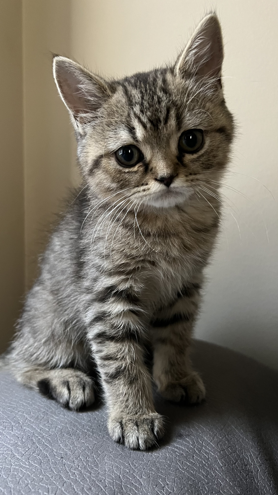
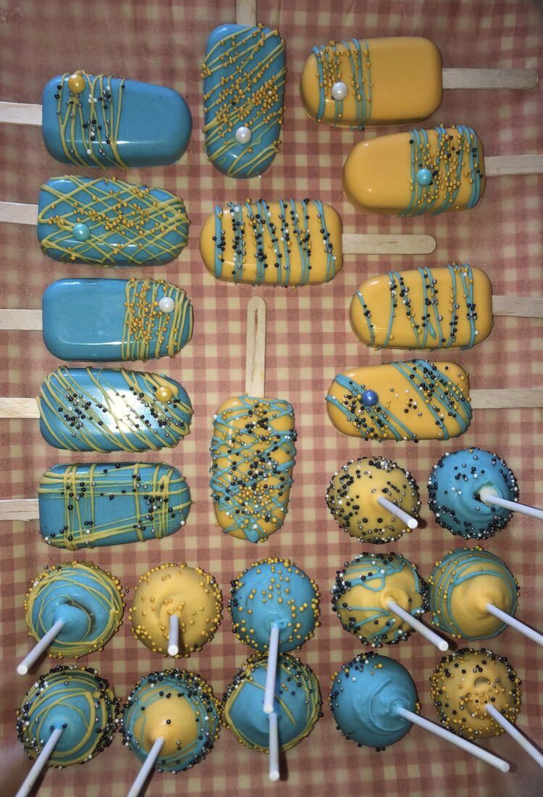

Introduction:
My name is Nishaa Badar and I am from Toronto, Ontario🍁. I am 19 years old and I am currently in my second year of Computer Engineering at Toronto Metropolitan University! I am very passionate about becoming a successful woman in the STEM field.
A couple of things that I enjoy doing include baking🧁, biking around with my little brother🚲, reading online books📱, playing with my kitten, Miinu and coding fun little programs💻. I also love animals, especially kittens😺. Some of my soft skills include organization, dedication, collaboration, and teamwork. My hard skills include being skilled in Microsoft Office, navigating through various social media platforms, and coding in multiple languages including Java, HTML, CSS, JavaScript and C.
 